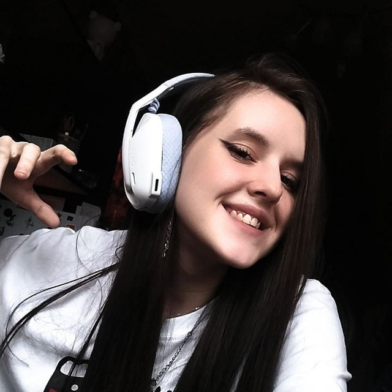

Main: Sage
Любимые игры: Valorant, Minecraft, Dead by Daylight, R.E.P.O.
Страна: Россия
Возраст: 20 годиков
О себе: Люблю стримить и общаться с подписчиками, создавать позитивную атмосферу. Стримлю регулярно, очень добрая стримерша, но иногда могу побомбить.